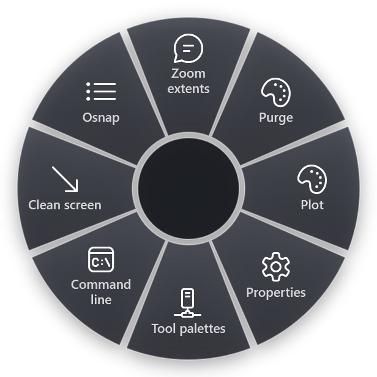

AutoCAD has two kinds of shortcuts, and people mix them up. Shortcut keys are key combinations like Ctrl+1 or F8: they work anywhere in the program. Command aliases are short names you type on the command line, like L for LINE, followed by Enter or Space. Both save time, in different ways.
This list is for AutoCAD on Windows, including the specialised toolsets. The shortcut keys are from Autodesk's Shortcut Keys Reference in the AutoCAD help. The aliases are the defaults from the program's own alias file, acad.pgp, which your office may have changed.
Function keys
- F1 opens Help.
- F2 expands the command history.
- F3 turns object snap on or off.
- F7 turns the grid on or off.
- F8 turns Ortho mode on or off.
- F9 turns snap mode on or off.
- F10 turns polar tracking on or off.
- F11 turns object snap tracking on or off.
- F12 turns dynamic input on or off.
When a drawing suddenly behaves strangely, a function key pressed by accident is the first thing to check. The same toggles are on the status bar at the bottom.
Ctrl shortcuts
- Ctrl+1 shows or hides the Properties palette.
- Ctrl+2 opens DesignCenter.
- Ctrl+3 shows or hides the Tool Palettes.
- Ctrl+8 opens QuickCalc.
- Ctrl+9 shows or hides the command line. If yours has disappeared, this brings it back.
- Ctrl+0 turns Clean Screen on or off, for the most drawing area.
- Ctrl+Shift+C copies with a base point you pick, so the paste lands exactly where you want it.
- Ctrl+Shift+V pastes the clipboard as a block.
- Ctrl+P opens Plot.
- Ctrl+Tab switches to the next open drawing.
- Ctrl+Z undoes, Ctrl+Y redoes.
Command aliases worth typing
Type the letters, then Enter or Space. Space works like Enter on the command line, and it is easier to reach.
Drawing
- L for LINE, PL for PLINE.
- C for CIRCLE, A for ARC.
- REC for RECTANG.
- H for HATCH.
- T or MT for MTEXT.
- DLI for DIMLINEAR.
Changing things
- M for MOVE, CO or CP for COPY.
- RO for ROTATE, SC for SCALE, MI for MIRROR.
- O for OFFSET.
- TR for TRIM, EX for EXTEND.
- F for FILLET, CHA for CHAMFER.
- AR for ARRAY.
- X for EXPLODE, E for ERASE.
- MA for MATCHPROP.
Organising
- LA for the Layer Properties Manager.
- B for BLOCK, I for INSERT.
- Z for ZOOM. Type Z, Enter, E, Enter for zoom extents.
Small habits that add up
- Repeat the last command by pressing Enter or Space at an empty command line.
- Zoom extents by double-clicking the mouse wheel.
- Cancel anything with Esc.
- Pick a one-off snap by holding Shift and right-clicking in the drawing area. The object snap menu appears for the next point only.
- Look at the command line. AutoCAD shows the options of every command there, with one capital letter you can type to pick each option.
How to remember them
- Learn the aliases you already use. Watch which ribbon buttons you click most for a day, then learn the alias for those five. For many drafters that is LINE, MOVE, COPY, TRIM and OFFSET.
- Most aliases are the first letters. LINE is L, MOVE is M, COPY is CO. When the first letter is taken, the alias usually adds the second: CHA for chamfer, since C is already circle.
- Function keys are toggles. Put one hand on the left of the keyboard for aliases and use F3 and F8 without looking.
- Make your own. If an alias does not suit you, change it: Express Tools has an alias editor, and acad.pgp is a plain text file.
The commands you type once a month
Purge, audit, overkill, eTransmit, reloading xrefs: these are the commands you need now and then, and nobody remembers their exact options. They are also the ones that cost the most time when you have to look them up.
RadialDeck is the radial menu for Windows that we make. When AutoCAD is in front, the hotkey opens an AutoCAD ring: hold, flick toward a slice, release. Each slice either presses keys or types a command on the command line for you.

The gallery has 29 AutoCAD slices. Among them: Zoom extents, Purge (removes every unused block, layer, style and linetype in one go, without the dialog), Plot, Properties, Tool palettes, Command line, Clean screen, Osnap, Ortho, Polar, Copy with base, Audit and fix the drawing, Reload all xrefs, Isolate the selected layer, Unisolate layers, Delete duplicate objects, ETransmit, Recover a drawing, Match properties, Make a block, Measure area and Measure distance. The AutoCAD page shows what each one types.
A sensible split: keep the drawing and editing aliases in your fingers, and put the maintenance commands on the ring.
Quick reference
- Toggles: F3 osnap, F8 ortho, F10 polar, F12 dynamic input
- Palettes: Ctrl+1 properties, Ctrl+3 tool palettes, Ctrl+9 command line, Ctrl+0 clean screen
- Clipboard: Ctrl+Shift+C copy with base point, Ctrl+Shift+V paste as block
- Aliases: L, PL, C, M, CO, RO, TR, O, F, LA, Z
RadialDeck is free for two rings and has a 14-day trial of Pro, which adds a ring per program such as the AutoCAD ring above. It is in the Microsoft Store.
Try it in RadialDeck
Free for two rings, with a 14-day trial of everything in Pro. Windows 10 and 11, from the Microsoft Store.